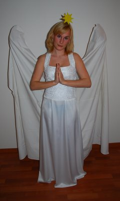
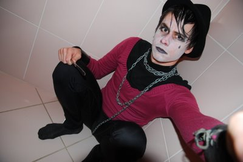
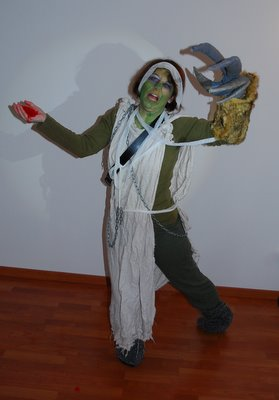
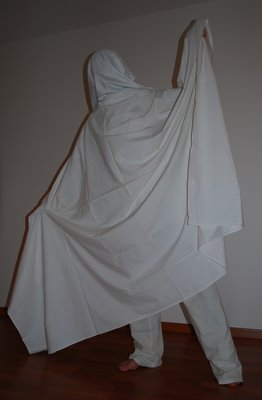
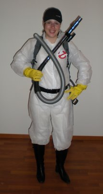

- Úvodní text
- Pravidla
- Struktura hry
- Seznam týmů
- Fotogalerie
- Poděkování
- Ztráty a nálezy
- Úvodní úkol
- Zadání I. části
- Řešení I. části
- Statistika I. části
- Statistika úkolů
- Výsledky celkové
- Zajímavé odkazy
- Kontakt
- EXIT I. (2002)
- EXIT II. (2003)
- EXIT III. (2004)
- EXIT IV. (2005)
- EXIT V. (2006)
- EXIT VI. (2007)
- EXIT VII. (2008)
- EXIT VIII. (2009)

EXIT
Hra, která má ducha!
PRAVIDLA
EXIT je týmová městská hra s využitím Internetu. Vyznačuje se vysokým tempem hry (např. plnění více úkolů současně, ostré časové limity) a vyžaduje tedy kromě bystrého myšlení a dobré orientace po Brně též dobrou strategii, koordinaci, spolupráci, ...
Pokud jste ještě EXIT nehráli, bude lepší, pokud se před čtením pravidel podíváte na stránky předchozích ročníků. Bude vám jasnější, o co zhruba při této hře jde.
Základní struktura hry
- Hra začíná 28. 5. 2010 v 16:00 na zatím neurčeném místě.
- Vyhlášení výsledků je ve 23:00 na místě, které bude zveřejněno až během hry.
- Hra se skládá ze tří částí. V prvních dvou částech můžete získat body. O celkovém pořadí rozhoduje čas úspěšného dokončení třetí části, poté body z jednotlivých částí. První část je jako obvykle přes Internet, v druhé části postupuje tým společně a plní úkoly pro celý tým, ve třetí části ... to je překvapení. V druhé a třetí části není Internet potřeba. Podrobnější struktura jednotlivých částí je uvedena na samostatné stránce.
- Dodatky a upřesnění výše uvedených pravidel budou zveřejněny účastníkům později, nejpozději v úterý před hrou. Drobná změna pravidel je možná.
Týmy a oblečení
- Hry se účastní čtyř až šestičlenné týmy.
- Větší týmy mají výhodu. Fakt dost.
- Výhodou je také dobrá orientace po Brně.
- Účastníci musí mít minimálně 15 let.
-
Každý hráč v týmu si vybere jednu následujících rolí a náležitě se podle toho oblékne (uvedené povinné prvky jsou minimální, fantazii se meze nekladou):
- Anděl: bílý oděv, zlatá hvězda, křídla
- E-mař/E-mařka: patka, růžový kus oděvu, výrazné líčení, kožené či kovové doplňky http://www.ceknito.cz/video/449070, zná a chová se podle těchto EMO pravidel http://bud-emo.blog.cz/0705/emo-pravidla.
- Zombie: výrazně nezdravá barva pleti, otrhaný rubáš (ať už je tím myšleno cokoli), mrtvolný vzhled, v částečném rozkladu
- Duch: bílý splývavý oděv, snímatelná část s prostřiženýma očima kryjící obličej
- Krotitel duchů: kombinéza, logo z filmu Krotitelé duchů, ducholap - přístroj pro odchyt duchů, kšiltovka
- Jak jsem zemřel: dostatečně originální a jasně rozpoznatelná příčina smrti. Popisek k fotografii, kterou jsme převzali z policejního spisu: oběť, JUDr. Novák se při telefonátu tak dlouho točil na své kancelářské židli, až se uškrtil telefonní šňůrou. cizí zavinění vyloučeno.
- V každém týmu se role vyskytyje maximálně jednou.
- Doporučujeme mít v týmu všechny role, může to být výhodou. Pokud vás není šest, doporučujeme sehnat si ještě někoho.
- Vaše role se nesmí během hry změnit, každý hráč po celou dobu zůstavá ve stejné roli, jako na začátku hry.
Ukázka jednotlivých rolí:
|
 Anděl |
 E-mař/E-mařka |
|
 Zombie |
 Duch |
|
 Krotitel duchů |
Jak jsem zemřel |
Omezení
- Je povoleno přepravovat se pouze po vlastních nohách a pomocí MHD. Zejména je tedy zakázáno používat kola, kolečkové brusle, koloběžky a auta.
- Je zakázáno mít podpůrné členy (nad povolených šest osob v týmu).
- Je zakázáno spolupracovat či jen sdílet informace s ostatnímy týmy, pokud není v zadání úkolu specifikováno jinak.
Místa
Pokud se nějaký úkol bude vztahovat k nějakému konkrétnímu místu (v první části hry), pak to bude na 90 % v následující oblasti (tzn. mohou se vyskytovat místa i mimo tuto oblast, ale jen ojediněle a blíže než 30 minut pěšky od centra):- Je tedy výhodné mít zajištěný počítač co nejblíže této oblasti.
- Zadání úkolů (i kódy) půjde téměř vždy přenést mluveným slovem.
- Pokud budete mít počítač dále od centra, můžete to ještě pořád dohnat telefonováním.
- Každopádně je však výhodnější být blíž.
Potřebné pomůcky
- Počítač s připojením na Internet (nutné).
- Mobilní telefony - povinně alespoň jeden na tým, číslo je potřebné zadat při registraci.
- Tužky, papíry, nůžky...
- Lístky na MHD či šalinkartu.
- Čelovka pro každého hráče.
Poznámky
- Oficiálním časem hry je čas našeho serveru. Synchronizujte si svoje hodinky. Někdy jde opravdu o sekundy.
- Pokud nemáte příliš představu, o co se jedná, podívejte se na stránky předchozích ročníků hry, kde mimo jiné najdete zadání úkolů.
- Hra je poměrně hodně náročná na strategii a koordinaci. Doporučujeme dobře se dopředu domluvit, zejména pokud hrajete poprvé. Při hře běží čas zatraceně rychle.
- Pokud nemáte zkušenosti s podobným typem her, tak doporučujeme "rozcvičit" se na úkolech z předchozích EXITů a podobných her (!TMOU, Bedna, Sendvič). Zkušené hráče nočních šifrovacích her upozorňujeme, že typ úkolů a tempo hry jsou na EXITu poměrně výrazně odlišné od ostatních her.
- Předpokládáme, že všichni hrají proto, že si chtějí zahrát a že tedy budou hrát v duchu "fair-play".